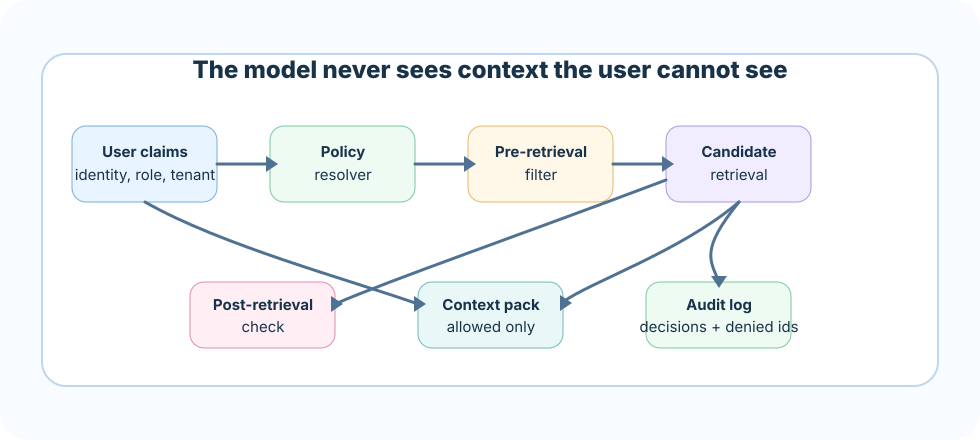

Production RAG must answer only with information the user is allowed to see. Access control is not a UI checkbox; it is a retrieval, indexing, context, prompt, and audit architecture.
How to read this chapter
Security starts before retrieval: user identity and document permissions must shape the candidate pool.
Metadata is policy: tenant, role, source status, sensitivity, and expiry fields control behavior.
Safety is layered: pre-filter, post-filter, context-pack checks, prompt rules, and audit logs all matter.
Auditability builds trust: production teams must explain why a chunk was used or denied.
A single unfiltered retrieval can hand a stranger's question the keys to a file it was never meant to open — and the assistant will answer politely, with citations, while it does it.
Core ideaAccess control and safety in RAG means every retrieval, every context pack, and every generated answer stays inside the requesting user's permission boundary, checked before the model ever sees the data — not patched afterward by asking it nicely to forget what it read.
Sub-topic 1 of 13
Why Access Control Matters
A RAG assistant can accidentally become a data leak if it retrieves documents outside the user's permission boundary. The danger is quiet: the final answer may reveal a salary band, legal memo, customer secret, unreleased roadmap, or internal incident note without showing the raw source.
Safety north starThe model should never receive context the user is not allowed to access.
Do not rely on the model to keep secrets. Prevent restricted context from entering the prompt.
Sub-topic 2 of 13
Real-Life Analogy: The Keycard Building
Think of a large office building with a badge reader at every floor and every door. Everyone who works there has a badge, but not every badge opens every room. A finance analyst's badge opens the finance floor and the general kitchen, but it does nothing at the executive boardroom or the server room. Crucially, the check happens at the door, before you ever step inside — not after you've already wandered around and someone asks you to leave.
A RAG system needs the same discipline. "Being logged in" is like having a badge at all: it proves who you are, not what you can see. The pre-retrieval filter is the door reader that decides which rooms even show up on your directory. The post-retrieval check is the guard who double-checks your badge once you're standing in the doorway, in case your access changed since you walked in. And the audit log is the building's badge-swipe history — the record that lets security reconstruct, months later, exactly who opened which door and when.
Sub-topic 3 of 13
Identity and Claims
Every request should resolve user claims: tenant, user id, role, group, department, clearance, region, and purpose. These claims become retrieval filters and audit fields.
Tenant
Prevents cross-customer leakage.
Role
Controls functional access such as finance, HR, legal, or support.
Clearance
Separates public, internal, confidential, and restricted material.
Sub-topic 4 of 13
Security Metadata
Chunks need security metadata at indexing time. If permissions live only in the original source system and are not reflected in the index, retrieval can drift from source-of-truth access.
Sub-topic 5 of 13
Retrieval Filters
Apply filters before search where supported, and verify after retrieval before context injection. Log filtered-out gold evidence so you can distinguish security behavior from search failure.
The context pack should include only allowed evidence, cite only allowed sources, and report denied chunks in an internal audit field, not in the user answer.
Sub-topic 7 of 13
Prompt Injection
Retrieved documents may contain text like "ignore previous instructions." Treat documents as data. Use boundaries, sanitize high-risk content, and test adversarial snippets.
Sub-topic 8 of 13
Audit Logs
A useful audit log contains request id, user claims, policy version, filters, allowed chunk ids, denied chunk ids, denial reasons, answer id, and citations used.
Sub-topic 9 of 13
Architecture View

Every request is resolved to claims, filtered before and after retrieval, packed into allowed-only context, and recorded in an audit log.Sub-topic 10 of 13
Common Mistakes
M01
Filtering only in UI
Symptom: the model still receives restricted context even though the screen hides it.
Better move: filter before context injection, not just before display.
M02
No permission refresh
Symptom: a user who lost access last week can still retrieve the document today.
Better move: sync source-system permission changes into the index on a defined schedule.
M03
No denied-context audit
Symptom: nobody can explain why a chunk was excluded, so security behavior looks like search failure.
Better move: log denied chunk ids and denial reasons separately from search misses.
M04
Trusting the model with secrets
Symptom: restricted context is sent to the model with a prompt instruction to "not mention it," and it leaks anyway.
Better move: never send restricted context in the first place; prompting is not a security boundary.
M05
Assuming the vector index inherits source permissions
Symptom: a document that is restricted in the source system is fully searchable in the vector store because nobody carried the ACL over at indexing time.
Better move: treat permission sync as a first-class pipeline step and verify it with a test document that should never appear for a low-privilege user.
M06
Skipping the filter on cached results
Symptom: a semantic or response cache returns a previous user's chunks to a new user because the cache key ignored identity.
Better move: include user claims in the cache key, or re-run the access filter on every cache hit, not just on cache misses.
M07
Not testing mid-session role changes
Symptom: a user's role is downgraded, but their still-open session keeps answering with the old, wider permission set.
Better move: resolve claims fresh per request instead of caching them for the life of a session, and add a test that changes role mid-conversation.
M08
Logging denied chunks in a way that leaks them
Symptom: the audit log meant to explain a denial stores the full restricted chunk text, so anyone with log access can read what was supposedly blocked.
Better move: log chunk ids, source, and denial reason, not the restricted content itself, and restrict who can read the audit log.
Sub-topic 11 of 13
Interview-Level Understanding
A strong answer sounds like this: "I resolve user identity into claims — tenant, role, clearance — on every request, and use those claims to filter candidates before retrieval, not just before display. I re-check access after retrieval to catch stale or mixed-sensitivity chunks, and I keep the cache and session logic aware of identity so a role change or a cache hit can never leak the previous state. Denied chunks are recorded by id and reason, never by content, so the audit trail itself can't become the leak. Retrieved text is always treated as data, never as instructions, so prompt injection can't widen what a user is allowed to see."
Sub-topic 12 of 13
Points To Remember
Access control must happen before the model sees context, not after the answer is shown.
User claims — tenant, role, clearance — should drive both pre-retrieval and post-retrieval filtering.
Caches and sessions need identity awareness, or they will silently replay another user's access.
Audit logs should record ids and reasons for denials, never the restricted content itself.
Retrieved documents are data, not instructions — prompt injection is a safety failure, not just a quality one.
Sub-topic 13 of 13
Project Roadmap
Build an access-aware RAG gateway. It should resolve user claims, filter chunks, create an audit record, prevent restricted context from entering the prompt, and provide safety metrics like denied-chunk count and access-policy version.